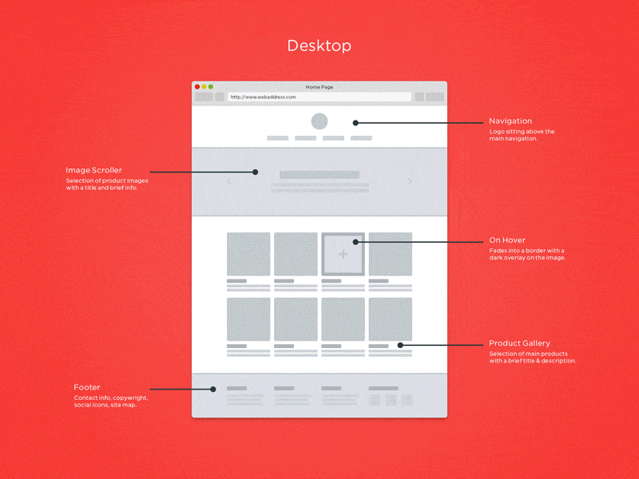

La planificación de webapps implica el diseño estratégico de aplicaciones web, incluyendo
la definición de objetivos, distribución de tareas y asignación de recursos para un desarrollo eficiente y centrado en el usuario.
Análisis de Requisitos: Identificación de necesidades y objetivos de la aplicación.
Diseño: :Creación de prototipos, diseño de la base de datos y la interfaz de usuario.
Soluciones en la nube como Firebase.

Herramientas de Desarrollo: Visual Studio Code, Sublime Text para la codificación.
Git para el control de versiones.
Pruebas: Verificación del rendimiento, seguridad y funcionalidad de la aplicación.
Despliegue: Publicación de la aplicación en un entorno de producción.
Mantenimiento: Actualizaciones, corrección de errores y mejoras continuas.